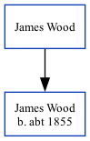

James Henry Wood
[
Home
] | [
Calendar
] | [
Surnames Index
] | [
Family History
]
James Wood
andhad 1 child, James.
Children
James
was born
c.
1855
Family Tree

Generated by
Ged2Site
. Last updated on Apr 1, 2025